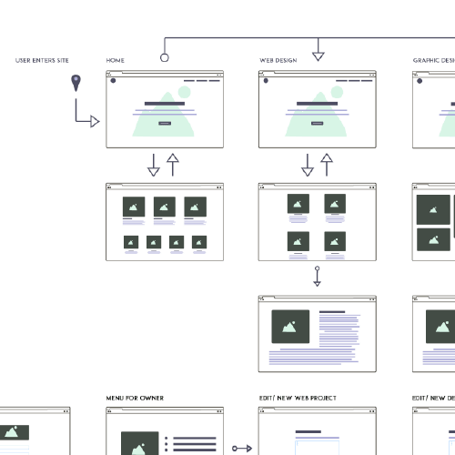

The Who

My name is Darian Rosebrook and I am a full process designer. I help individuals and small businesses define their brand through Graphic and User Experience design. I want to help you achieve your goals through a process of discovery, exploration, design, and review. Let's explore how to build up your brand together!
I have spent a considerable amount of time refining my skills as a desinger because I have a passion for making things. Apart from finding me arms deep in art supplies, I also work in customer service where I experience the best practices when dealing with difficult situations. Combining these two areas of work is an art that comes with a lot of patience.
The What

As time goes on, there will always be a new and upcoming technology. That is the nature of the game. What doesn't change is the principles of design. Though time tested these principles may be I choose to utilize the education that's available to keep up to date. Occasionally, I write articles defining my experiences on Medium and you can find my explorations in the up and coming on Twitter and Codepen!
When I am not with a client or doing other work, you can find me playing with my lovely lady and my son, traversing across the PNW. We take our time to support local businesses and invest our time in strengthening our connections with others. I hope to take some time to get to know you as well! Even if it's just to say hello, go ahead and drop me a message.
Web Design Process
Defining how we'll achieve the project goals through design.
Project Goals

Userflow

Wireframing

Code

In the workflow of this design process, we'll explore the steps and goals of your project to understand the who and what we are designing for. By completing these steps we can outline the type of webpages we will need, the depth of the audience we'll be creating for, and the overall message we want to convey. We'll create actionable steps together to dive further into the process.
Together we'll create a map that shows how we are going to frame the content of the page. We will have working drafts to make sure that we don't leave stones unturned. Since this is a feedback-heavy step in the process, communication will be the key to this successful project.
Once we can agree on the overall direction, we then go into developing the website. Here is where all of the work will come together to breath life into your brand. I'll use Front End Developer code to process our previous briefs and the agreed direction into a working, living website. Together we can achieve those goals.
Web Design Work
Some of the things I have done with Web Design.

I would have to say, when you make something for yourself, you have even higher expectations for everything that you do. This was true while making my portfolio. You can follow this link to view the article I wrote on the process or view the source.

Here is where play with ideas before I launch them. Though it is nice, I usually take care to not use it as a crutch. For reference, my posts show what I can do with Front End Development. Take a look at the whole collection of front end coded projects and user interface items.

This is a collection of the various UX | UI elements that I have created for previous client projects. I use this as a reference for some of the minor elements that make a good design a great design.

I had a lot of fun in creating newsletter layouts in the past. With that and other projects, I have a few ways to improve the UX and UI in these designs. There are quite a few projects here to see both sides of what goes on behind the webpage.
Graphic Design skills
Grid Based Layouts
Color Theory
Concept Development
Iconography
Typography
Digital Image Manipulation
Tools
Adobe Illustrator
Adobe Photoshop
Inkscape
Gimp
Graphic Design Examples
Where you can find some of my work.

I took part in a 100 day challenge to create and share 100 UX | UI pieces. The briefs are short and succinct allowing for creative direction, but allowing you to focus on what I specialize in. These are from the earliest part of my career.
Needing more in-depth work. I started using BriefBox to continue working on design skills if there were no projects to work on at the moment.

Here is a collection of some of the branding work I have done. I used a lot of these in the Daily UI pieces along with some client work to bring a life to the brand..

I have a few free resources for download, to fuel that designer in you. They're free of charge, just don't sell them off as your own.
About Myself

I have a love for artistic work. I feel that unless I'm spending time with my family, I need to be making things. The feeling of getting something done helps me be motivated for the next project. In spirit, designing things is the happy medium between art and function, allowing myself to solve problems by design that otherwise couldn't be resolved. I allow time and care when going over those obstacles and try to make it fun for everyone involved along the way.
I want to thank you for taking the time to check out my work. Let's talk about how we can leverage my skillset to help you achieve your goals. I am always looking to meet new clients and for feedback on how I can improve this experience for the next person. If you would like to chat over anything at all you can always shoot me a message.